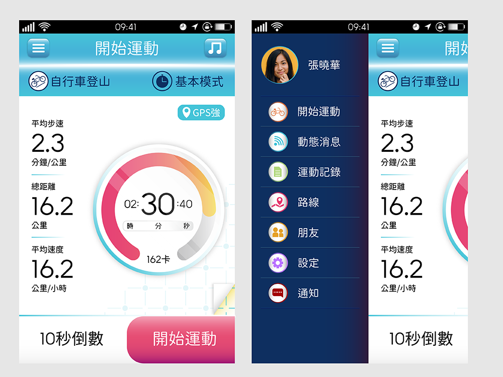
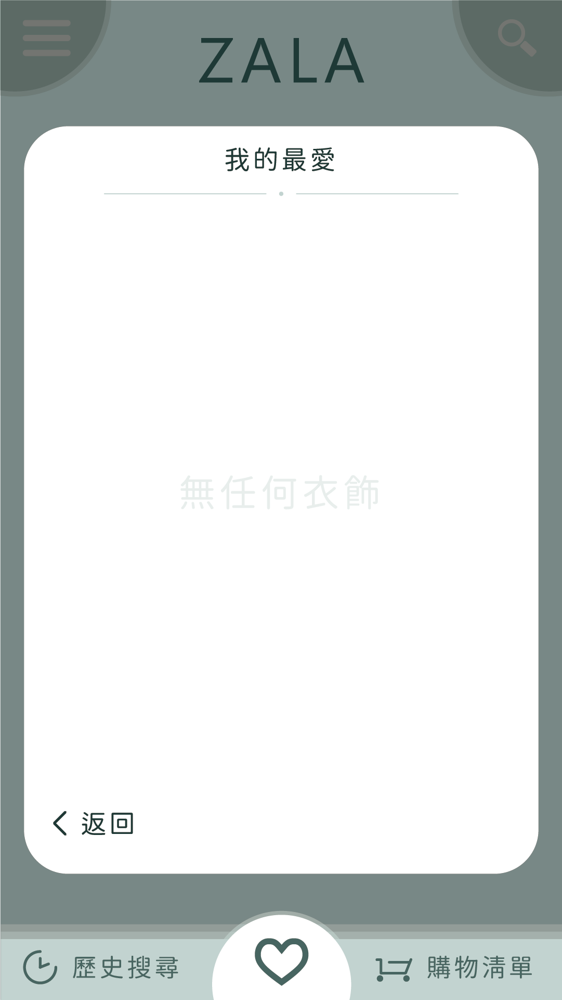

Banner設計

使用軟體：Adobe Illustrator CC
Banner設計練習。
照片來自無版權圖庫，其餘則為自己使用軟體繪製、排版。
標準字設計
使用軟體：Adobe Illustrator CC
運用於專題遊戲「純淨之靈」中。
根據角色立場及氛圍決定顏色。
使用軟體：Adobe Illustrator CC
根據對同學的要求做的標準字。
同學希望有「藍色系、簡約」的印象。
使用軟體：Adobe Illustrator CC
設計給自己的繪畫作品集標準字。
作品集主題為「場景」，由於作畫的過程改變好幾次做法，有種在「實驗」的感覺。
因此我結合「科學」的意象，設計了這個標準字。
UI介面
使用軟體：Adobe Illustrator CC
為專題遊戲「純淨之靈」的選單介面。
圖像為自己設計，從左到右分別為：
繼續遊戲、選擇章節、系統設定、返回標題、離開遊戲。

使用軟體：Adobe Illustrator CC
APP介面設計練習，主題為「運動」。
右圖為往右滑會出現的選項。

使用軟體：Adobe Illustrator CC
APP介面設計練習，主題為「衣飾」。
左上角可以點開選單；右上角則是搜尋功能。